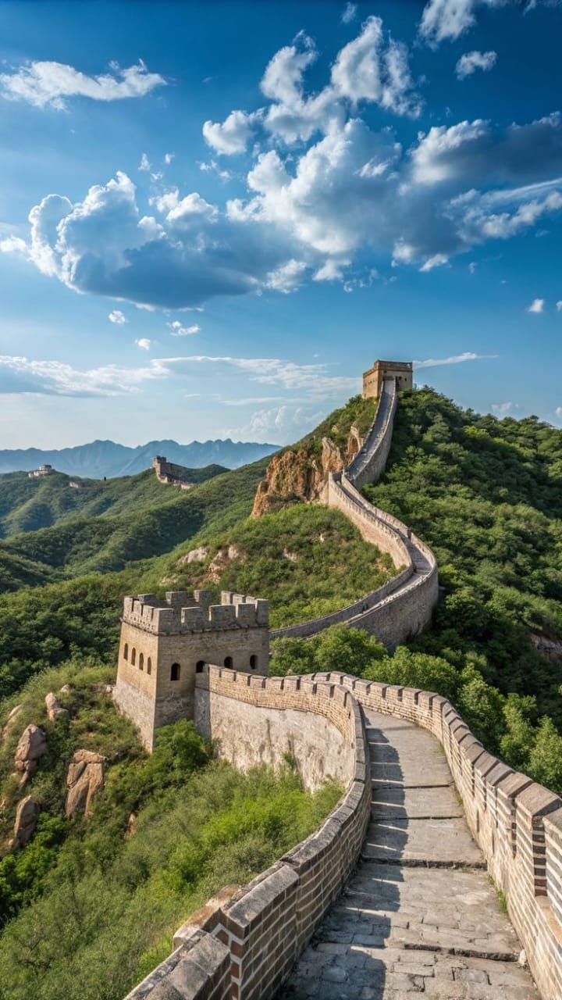
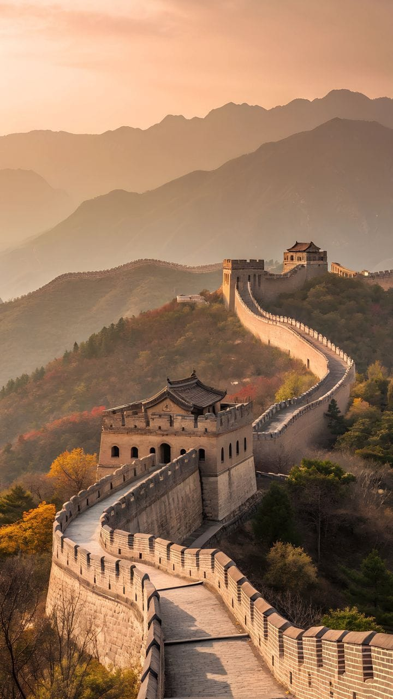
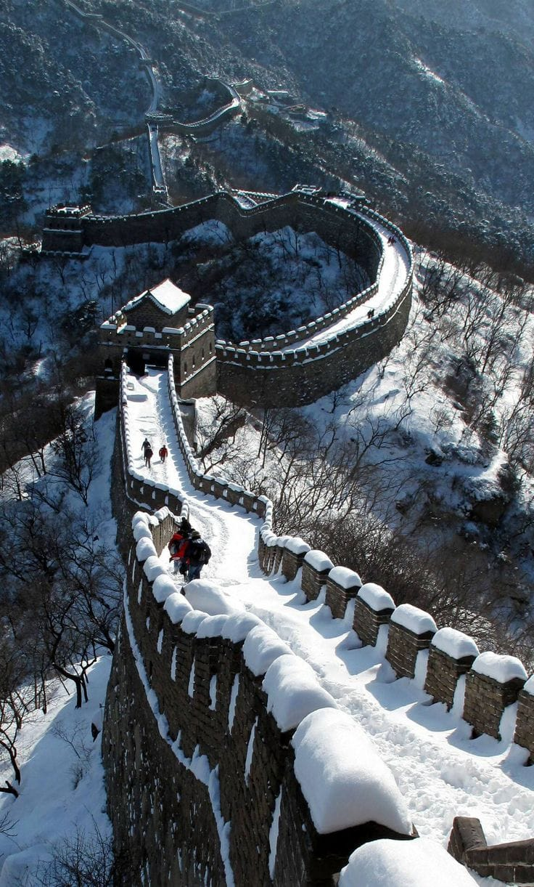

يُعد سور الصين العظيم واحدًا من أعظم الإنجازات الهندسية والعسكرية في تاريخ البشرية، ويقع في شمال الصين ممتدًا عبر الجبال والهضاب والصحارى لمسافات هائلة. بدأ بناء السور منذ أكثر من ألفي عام خلال عهد الأباطرة الصينيين، وكان الهدف الرئيسي منه حماية الصين من الغزوات والهجمات القادمة من القبائل الشمالية. يبلغ طول السور آلاف الكيلومترات، وقد تم بناؤه باستخدام الحجارة والطوب والخشب، كما يضم أبراج مراقبة وحصونًا عسكرية كانت تُستخدم لمراقبة الحدود وإرسال الإشارات التحذيرية. يتميز السور بتصميمه المعماري المذهل الذي يتماشى مع التضاريس الطبيعية للجبال، مما جعله رمزًا للقوة والإصرار والعظمة الحضارية الصينية. يُعتبر سور الصين العظيم من أشهر المعالم السياحية في العالم، وقد أُدرج ضمن قائمة التراث العالمي لليونسكو، كما تم اختياره ضمن عجائب الدنيا السبع الجديدة بسبب قيمته التاريخية والثقافية الهائلة.